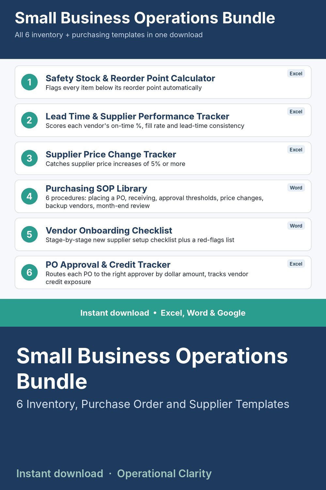

Small Business Operations Bundle

EVERYTHING IN THE INVENTORY BUNDLE AND THE PURCHASING BUNDLE, TOGETHER, FOR LESS.
All 6 templates from both the Inventory Management Bundle and the Purchasing Management Bundle, for less than buying them individually or as the two separate bundles.
WHAT'S INCLUDED (delivered as 5 downloadable files - the SOP Library and Vendor Onboarding Checklist are provided together in one zip file, everything else is its own file)
1. Safety Stock and Reorder Point Calculator
2. Lead Time and Supplier Performance Tracker
3. Supplier Price Change Tracker
4. Purchasing SOP Library (6 full procedures)
5. Vendor Onboarding Checklist
6. PO Approval and Credit Tracking Sheet
Together these cover the full purchasing-to-inventory cycle: onboarding a vendor, placing and approving a PO, tracking whether it arrives on time and at the right price, and knowing exactly how much safety stock and reorder point each item needs.
WHAT'S INCLUDED PER TEMPLATE
- Excel (.xlsx) or Word (.docx) file as applicable - no macros
- Google Sheets / Google Docs version
- Start Here instructions and sample data or placeholders
WHO THIS IS FOR
Small business owners and purchasing/operations teams who want the complete system in one purchase instead of piecing it together.
INSTANT DOWNLOAD - no physical item will be shipped. Because this is a digital product, all sales are final.